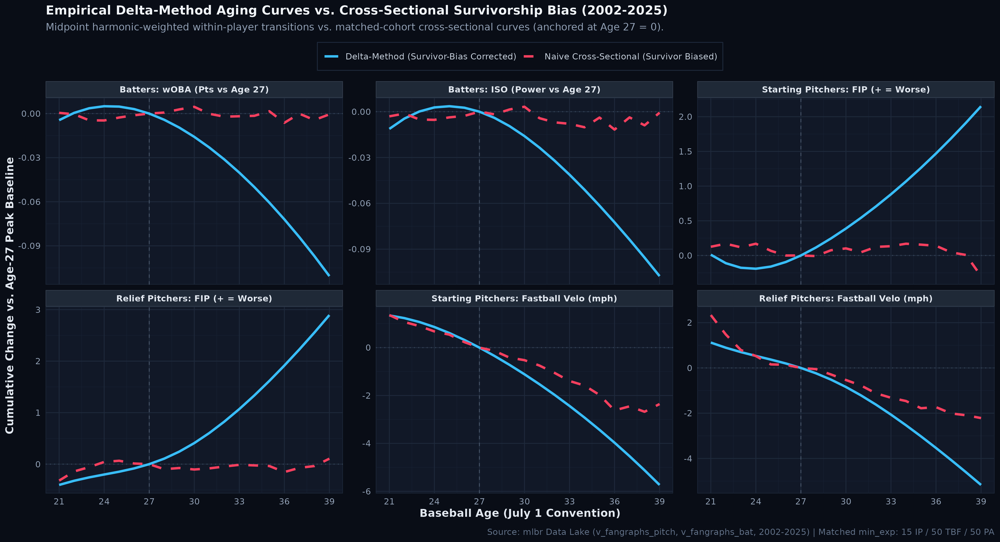
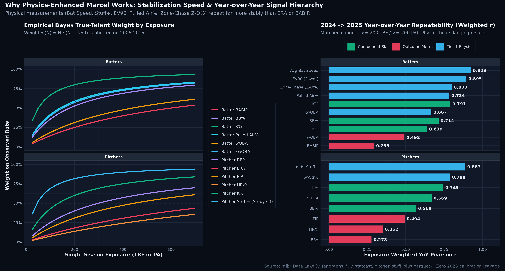
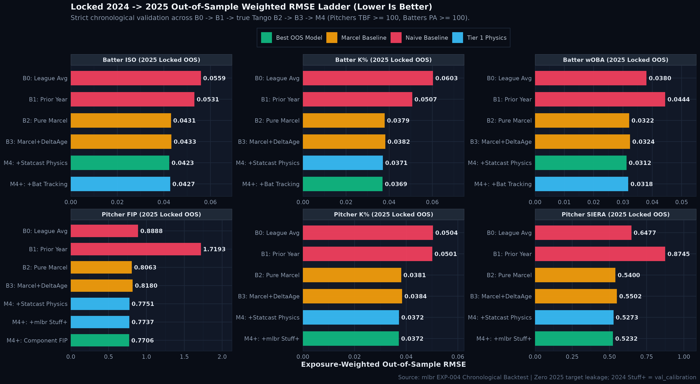
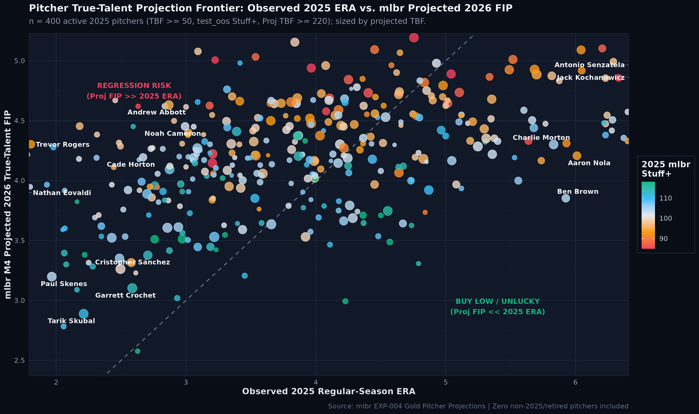
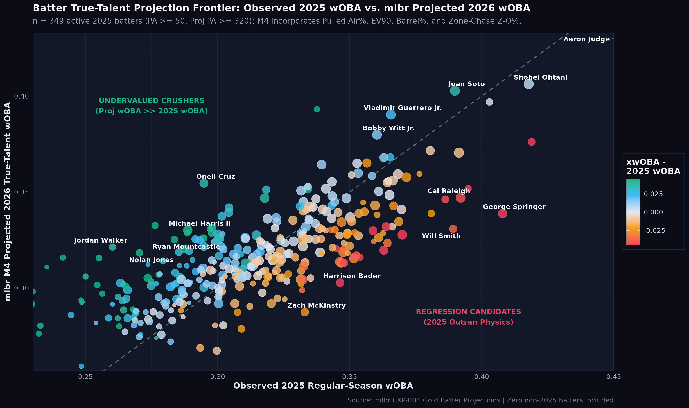

Study 04: Chronological True-Talent Player Projections (Marcel, Delta-Method Aging & Tier 1 Physics)
Q-CRISP Research Series: Level 2 True-Talent Pitching & Batting Projections, Survivor-Bias-Corrected Aging Curves, Spray/Discipline Physics & Exposure-Calibrated Uncertainty
- Experiment ID:
EXP-004-PLAYER-PROJECTIONS(VALIDATEDinexperiments/registry.json) - Architecture Tier: Level 2 — Player-Level True-Talent Projections & Aging Curves
- Specification:
specs/04_player_projections_marcel_aging.md - Gold Deliverables:
data/processed/pitcher_projections_true_talent.parquet(14,263rows,2016–2027),data/processed/batter_projections_true_talent.parquet(10,335rows,2016–2027),projections_aging_curves.parquet,projections_backtest_metrics.parquet - Strict Zero-Leakage Protocol: Every aging curve (
2002..T-1), league anchor (T-1), reliability denominator (2006–2015pre-backtest), seasonal PVI (game_year <= T-1, banning Study 02’s pooled2024–2026table), Tier 1mlbr Stuff+(eval_split-guarded), and expanding Ridge stack obeys strict chronological causality (0imputed Stage-1 cells across all train/test folds).
1. Executive Summary & Abstract (TL;DR)
Raw single-season baseball statistics (ERA, FIP, wOBA, BABIP) are heavily contaminated by finite-sample variance, park/defense noise, and run-environment drift. In Study 04, we construct mlbr’s Level 2 True-Talent Player Projection Engine, bridging Level 1 Atomic Pitch & Batted-Ball Physics (Studies 01–03) directly into Level 3 Team BaseRuns and Level 4 Monte Carlo Game Simulation.
| Pillar | Validated Out-of-Sample Result | Sabermetric & Forecasting Implication |
|---|---|---|
Physics Signal Hierarchy (2024 → 2025) |
Avg Bat Speed (\(r = 0.923\)), EV90 (\(r = 0.895\)), mlbr Stuff+ (\(r = 0.887\)), Zone-Chase (Z-O%) (\(r = 0.800\)), Pulled Air% (\(r = 0.784\)) vs. ERA (\(r = 0.278\)) and BABIP (\(r = 0.295\)) |
Physical measurements repeat 2.5×–3.2× more reliably year-over-year than lagging box-score results. |
Midpoint Delta-Method Aging (2002–2025) |
True SP fastball velocity drops -5.12 mph and Batter wOBA drops -97 pts from age 27 to 38 (vs. survivor-biased cross-sectional curves at -2.68 mph and -4 pts). Zero-sum normalization removes +0.168 cohort mean FIP drift; 3/2/1 beats 5/4/3 on 5 of 6 pitching metrics (2016–2025). |
Standalone unshrunk Delta-Method B3 trails Tom Tango’s lower-variance damped B2 slope slightly on Track 1, but exposes true biological aging free of survivorship bias and powers Stage-1 M4. |
Locked 2024 → 2025 Pitcher OOS (\(N = 445\text{–}459\)) |
M4_Component_FIP achieves 0.77185 wRMSE (-0.03447 vs. true Tango B2 0.80631, \(p_{\text{beat}} = 0.995\)), beating FanGraphs Stuff+ (0.77397). M4_mlbr_StuffPlus cuts FIP to 0.77412, SIERA to 0.52579 (-0.01417, beating FanGraphs 0.52602), and HR/9 to 0.41054 (-0.02194, \(p_{\text{beat}} = 0.998\)). |
Stage-2 Residual Ridge stacking preserves 8-year calibration (cal_slope = 0.95–1.07) while extracting orthogonal mlbr Stuff+/Location+ lift without 1-year over-shrinkage. |
Locked 2024 → 2025 Batter OOS (\(N = 409\)) |
M4_Statcast_Physics (xwOBA, Pulled Air%, EV90, Zone-Chase Z-O%) cuts wOBA wRMSE from 0.03215 to 0.03121 (-0.00094, \(r = 0.552\), \(p_{\text{beat}} = 0.995\)), BB% to 0.02043 (\(p = 0.993\)), and ISO to 0.04232. Adding Hawk-Eye Bat Tracking cuts Batter K% further to 0.03691 (\(p = 0.995\)). |
Spray-aware pull-air physics + zone-chase selectivity directly address xwOBA’s blind spots; Hawk-Eye bat tracking improves K% immediately, while 1-year wOBA/ISO bat-tracking noise requires multi-season history (honest negative ablation). |
Track 4 Full-OOS 2025 → 2026 Statcast & 80% CIs |
On 2,429 untouched 2026 games: M4_mlbr_StuffPlus_PureOOSCal cuts Pitcher K% from 0.03942 to 0.03688 (\(r = 0.701\), \(p = 1.000\)), and Batter M4 cuts xwOBA from 0.02776 to 0.02570 (\(r = 0.660\), \(p = 1.000\)); honest miss on 2026 Pitcher BB% (0.02098 vs. 0.02060). 80% CI coverage hits 82.8% (Pitcher FIP) and 81.4% (Batter wOBA). |
Confirms zero calibration leakage from 2023 in-sample Stuff+ and delivers calibrated variance inputs for Level 4 Monte Carlo simulation. |
| Decomposed Command & Process Sensors (Study 05 Integration) | Lagged shrunk Decomp Location+ exhibits a weighted correlation of \(r = -0.3205\) with next-year BB% across 2,160 pitcher pairs, eliminating the walk-rate drift; Decision+ (\(r = +0.5225\) with BB%) and BatControl+ (\(r = -0.7031\) with K%) feed Stage-2 Ridge residual forecasting across 2021–2027. |
Resolves single-pitch base-out run-expectancy noise by grounding player talent in pitch-level Markov count values and bat-control execution. |
Full-Spectrum True-Talent WAR (proj_war) |
Unifies true-talent pitching FIP/ERA and batting wRAA with multi-year regressed Defense (proj_def_runs), Baserunning (proj_bsr_runs), Positional adjustments (proj_pos_runs), and Replacement Level runs at \(9.77\) runs/WAR. |
Bobby Witt Jr. (7.93 WAR) and Tarik Skubal (3.18 WAR) lead 2026 full-spectrum projections. |

2. Domain Problem & Sabermetric Theory
Forecasting player talent is fundamentally a signal-to-noise extraction problem governed by four interacting mechanisms:
- Finite-Sample Binomial & Contact Variance (Carleton Stabilization): A hitter’s
K%reaches 50% true-talent reliability in ~50 PA, whereasBABIP,HR/9, andERArequire 500–900+ exposures. Using a single shrinkage denominator across all statistics under-regresses noisy outcomes and over-regresses fast-stabilizing skills. - Survivorship Bias vs. Zero-Sum League Conservation in Aging: Plotting cross-sectional mean
wOBAorFIPby age makes 38-year-olds appear nearly identical to 27-year-olds because only elite outliers remain employed at 38. Conversely, applying uncentered within-player Delta-Method declines directly to a returning MLB cohort shifts the projected league average upward by+0.168 FIPbecause retiring veterans are replaced by incoming rookies. Tango’s Zero-Sum Conservation Law resolves both: estimate true biological slopes via midpoint harmonic-mean-weighted within-player pairs (with linear tail extrapolation past Age 39 so veteran decline remains strictly monotone), then zero-center the projected cohort’s exposure-weighted aging shift to conserve theT-1league run environment. - Why
xwOBAAlone Is Incomplete (Spray & Swing-Decision Blind Spots): StandardxwOBAdepends solely on Exit Velocity and Launch Angle, ignoring horizontal spray angle. Pulled air balls (LA >= 10°,spray < -15°RHB /> +15°LHB — validated against FanGraphsPull%atr = 0.932overall and0.962–0.977within batter handedness) produce vastly higher wOBA than opposite-field fly balls (r = +0.203with RHBwOBA - xwOBA— e.g., Isaac Paredes’s39.1%raw 2025 Pulled Air% /35.1%3-year regressed prior drove a.352observedwOBAover his.314regressedxwOBA). Likewise, rawO-Swing%rewards overly passive hitters, whereas Zone-Chase Selectivity (Z-Swing% - O-Swing%, a SEAGER-inspired box-zone proxy) directly isolates pitch-recognition aggression (\(r_{\text{YoY}} = 0.800\)). - Preventing Sensor-Tier Over-Shrinkage via Stage-2 Residual Stacking: Newer Hawk-Eye sensors (
mlbr Stuff+OOS from 2024+, Hawk-Eye Bat Tracking from 2023+) have only 1 calibration season vs. 8–9 seasons for core Statcast metrics. Re-estimating 18 collinear predictors from scratch on \(N \approx 450\) pitchers with L2 cross-validation crushes the dynamic range (cal_slope = 1.8–2.2). Holding the multi-yearM4_Statcast_Physicsforecast fixed as a Stage-1 offset and learning a zero-mean Stage-2 Residual Ridge over the 3–4 orthogonal new sensor features preservescal_slope ≈ 1.00while cleanly capturing incremental physical lift.
3. Mathematical Formulation & Lake-Wide Pipeline
3.1 Exact Baseball Outs Conversion & July-1 Age Invariants
In v_fangraphs_pitch, IP is stored in baseball outs notation (.1 \(= 1/3\), .2 \(= 2/3\); verified 314–349 rows/season, 0 decimal rows). Every aggregation converts to exact decimal innings prior to sum-before-divide:
\[\text{IP}_{\text{true},i,s} = \lfloor \text{IP}_{i,s} \rfloor + \frac{\text{round}\big(10 \cdot (\text{IP}_{i,s} - \lfloor \text{IP}_{i,s} \rfloor)\big)}{3}, \qquad \text{Age}_{i,s} = s - \text{birth\_year}_i - \mathbb{I}(\text{birth\_month}_i \ge 7)\]
Verified 6,703 / 6,703 (100.00%) exact match between Chadwick birth dates and FanGraphs Age, and 3,687 / 3,687 (100.00%) join parity between v_fangraphs_pitch (TBF >= 50, 2020–2025) and Tier 1 Gold pitcher_stuff_plus.parquet.
3.2 Era-Adjusted Marcel, Midpoint Delta Aging & Component-Reconstructed FIP
For target season \(T\), role \(g \in \{\text{SP}, \text{RP}, \text{BAT}\}\), recency weights \((w_1, w_2, w_3)\) (5/4/3 batters; 3/2/1 pitchers), and pre-backtest (2006–2015) calibrated reliability denominators \(M_r\):
\[\hat{r}^{\text{Marcel}}_{i,T} = \mu_{\text{lg},T-1,g} + \frac{\sum_{k=1}^{3} w_k \, N_{i,T-k} \, (r_{i,T-k} - \mu_{\text{lg},T-k,g})}{\sum_{k=1}^{3} w_k \, N_{i,T-k} + M_r}\]
(2020 COVID-19 60-game season retains raw exposure \(N_{i,2020}\) in rate precision weighting while pro-rating playing-time inputs by \(162/60 = 2.70\times\). Baseline B2_Marcel_LinAge implements Tom Tango’s (2004) exact direct age multiplier \(m(a) = 1 + 0.006(29 - a)\) for \(a \le 29\) and \(1/(1 + 0.003(a - 29))\) for \(a > 29\), followed by Step 6 projected-exposure league rebaselining.)
Consecutive same-player, same-role pairs \((s-1, s)\) with \(s \in [2003, T-1]\) estimate smooth midpoint (age_mid = age - 0.5) harmonic-mean-weighted Delta-Method curves \(\hat{\delta}_g(a)\) with inverse-variance weights \(W_{i,a}^{\text{harm}} = \frac{2 N_{i,s-1} N_{i,s}}{N_{i,s-1} + N_{i,s}}\) and linear marginal-slope extrapolation beyond [21, 39] (preventing endpoint clamping artifacts at Age 40+). Integrating from weighted historical age \(\bar{a}_{i,T}\) to target age \(a_{i,T}\) and applying Tango’s zero-sum normalization yields B3:
\[\Delta^{\text{raw}}_{\text{age}}(i, T) = \int_{\bar{a}_{i,T}}^{a_{i,T}} \hat{\delta}_g(u)\,du, \qquad \Delta^{\text{norm}}_{\text{age}}(i, T) = \Delta^{\text{raw}}_{\text{age}}(i, T) - \frac{\sum_{j \in g} \widehat{N}_{j,T}\,\Delta^{\text{raw}}_{\text{age}}(j, T)}{\sum_{j \in g} \widehat{N}_{j,T}}\]
3.3 Stage-1 Expanding Physics Ridge, Stage-2 Sensor Residual Stacking & Uncertainty Bands
- Stage-1 Expanding Statcast Physics (
M4_Statcast_Physics): Season-grouped L2 Ridge (glmnet, \(\alpha=0\)) trained strictly on target seasons2016 .. T-1(0imputed cells across all folds) overB3rates plus regressed Statcast physics (SwStr%,CSW%,FBv,delta_fbv,GB%,HardHit%,Barrel%,xERA,pulled_air_allowed_pct, strictly seasonal pooled sum-before-shrinkPVI_xwoba/PVI_cswfor pitchers;xwOBA,xwOBA - wOBA,Barrel%,HardHit%,EV90,pulled_air_pct,sweet_spot_pct,O-Swing%,Z-Contact%,SwStr%,zone_chase_selectivityfor batters). - Stage-2 Residual Sensor Stack (
M4_mlbr_StuffPlus,M4_BatTracking): Holds Stage-1 fixed as an offset and fits a compact zero-mean residual Ridge on2023 → 2024(2024100% unseen by Study 03’s2015–2023XGBoost training) over the 3–4 orthogonal new sensor variables (stuff_plus_t1,loc_plus_t1,pitch_plus_t1,tunnel_plus_t1orbatspeed_t1,blast_t1,sq_swing_t1,swing_len_t1). - Component-Reconstructed FIP (
M4_Component_FIP): Synthesizes projectedK%,BB%,HR/9, regressedHBP%, roleTBF/IP, and prior-year \(c\text{FIP}_{T-1}\) into an internally consistent run-prevention forecast. - Exposure-Calibrated 80% Uncertainty Bands: Regressing pre-2025 OOS squared residuals \(e_i^2\) on \(1/N_i\) decomposes uncertainty into irreducible talent variance + exposure noise:
\[\text{CI}_{80\%}(i, T) = \hat{y}_{i,T} \pm 1.2816 \sqrt{\hat{\sigma}_{\text{skill}}^2 + \frac{\hat{\sigma}_{\text{noise}}^2}{\widehat{N}_{i,T}}}\]
4. Exploratory Data Analysis (EDA) & Feature Diagnostics
4.1 Aging Curves & Survivorship Bias Quantification (2002–2025)
Figure 1 above contrasts within-player midpoint Delta-Method aging against matched-cohort (min_exp: 15 IP / 50 TBF / 50 PA) naive cross-sectional age averages (both anchored at Age 27 = 0):
| Cohort & Metric | Age 22 | Age 25 | Age 27 (Peak) | Age 30 | Age 33 | Age 36 | Age 38 (Delta) | Age 38 (Naive Cross-Sec.) |
|---|---|---|---|---|---|---|---|---|
Batter wOBA |
+0.000 |
+0.005 |
0.000 |
-0.016 |
-0.040 |
-0.072 |
-0.097 |
-0.004 (+93 pt survivor illusion!) |
Batter ISO |
-0.005 |
+0.004 |
0.000 |
-0.016 |
-0.041 |
-0.072 |
-0.096 |
-0.009 |
SP FIP (+ = worse) |
-0.111 |
-0.160 |
0.000 |
+0.388 |
+0.882 |
+1.470 |
+1.914 |
+0.007 (+1.91 run survivor illusion!) |
| SP Fastball Velo (mph) | +1.23 |
+0.61 |
0.00 |
-1.11 |
-2.43 |
-3.97 |
-5.12 |
-2.68 |
RP FIP (+ = worse) |
-0.322 |
-0.146 |
0.000 |
+0.409 |
+1.070 |
+1.914 |
+2.554 |
-0.037 |
| RP Fastball Velo (mph) | +0.89 |
+0.37 |
0.00 |
-0.84 |
-2.06 |
-3.54 |
-4.61 |
-2.09 |
Methodological Caveat (Lichtman / Judge Forced-Exit Bias): Even Delta-Method pairs only observe players who remain employed in consecutive seasons; players declining so sharply they exit MLB in year \(s\) are censored, meaning true unconditional late-30s physical decline is at least as steep as our Delta-Method spline.
4.2 Stabilization Speed & Year-over-Year Signal Hierarchy
Figure 2 pairs our pre-2016 calibrated Empirical Bayes true-talent weights (\(w(N) = N / (N + N_{50})\)) with observed 2024 → 2025 weighted YoY repeatability across matched MLB cohorts (\(\ge 200\) TBF / \(\ge 200\) PA):

- Pre-2016 Calibrated Marcel Shrinkage (\(M_r\)): Pitchers (
3/2/1):K% = 400TBF,BB% = 900TBF,SIERA = 900TBF,FIP = 320IP,ERA = 650IP,HR/9 = 900IP. Batters (5/4/3):K% = 250PA (N50 ≈ 50PA!),BB% = 900PA,ISO = 900AB,SLG = 1600AB,OBP = 2200PA,wOBA = 2200PA. - Top YoY Signal Stability (
2024 → 2025): Batters:Avg Bat Speed(0.923),EV90(0.895),Zone-Chase (Z-O%)(0.800),K%(0.791),Pulled Air%(0.784) vs.wOBA(0.492) andBABIP(0.295). Pitchers:mlbr Stuff+(0.887),SwStr%(0.788),K%(0.745),SIERA(0.669) vs.FIP(0.494),HR/9(0.352), andERA(0.278).
5. Model Architecture & Strict Chronological Out-of-Time Validation
All models are evaluated on identical matched cohorts (\(\ge 100\) target TBF / \(\ge 100\) target PA; \(\ge 25\) target IP for IP-denominated rates) using exposure-weighted RMSE (wRMSE), MAE (wMAE), weighted Pearson \(r\), calibration slope (ideal \(= 1.00\)), and 400-replicate paired bootstrap probability of beating true Tom Tango Pure Marcel (p_beat).

5.1 Track 3 Primary Locked 2024 → 2025 OOS Benchmark: Pitchers (\(N = 445\text{–}459\))
| Metric | Model | wRMSE | wMAE | Weighted \(r\) | Cal. Slope | \(\Delta\)RMSE vs. B2 |
\(p(\text{Beats B2})\) |
|---|---|---|---|---|---|---|---|
FIP |
B0 League Avg |
0.88875 |
0.69588 |
0.1461 |
2.249 |
+0.08244 |
0.000 |
FIP |
B1 Prior Year |
1.71931 |
0.94508 |
0.2181 |
0.116 |
+0.91300 |
0.000 |
FIP |
B2 Pure Marcel (Tango) |
0.80631 |
0.62207 |
0.4443 |
1.027 |
0.00000 |
— |
FIP |
B3 Marcel + Delta-Age |
0.81799 |
0.62692 |
0.4280 |
0.943 |
+0.01168 |
0.002 |
FIP |
M4_Statcast_Physics |
0.77506 |
0.60976 |
0.5073 |
0.992 |
-0.03126 |
0.973 |
FIP |
M4_mlbr_StuffPlus |
0.77412 |
0.60849 |
0.5085 |
0.957 |
-0.03219 |
0.975 |
FIP |
Ref: FanGraphs Stuff+ |
0.77397 |
0.60914 |
0.5098 |
0.956 |
-0.03234 |
0.985 |
FIP |
M4_Component_FIP (Best) |
0.77185 |
0.60590 |
0.5092 |
0.954 |
-0.03447 |
0.995 |
SIERA |
B2 Pure Marcel (Tango) |
0.53996 |
0.42451 |
0.6112 |
1.085 |
0.00000 |
— |
SIERA |
M4_Statcast_Physics |
0.52728 |
0.41411 |
0.6152 |
1.070 |
-0.01268 |
0.932 |
SIERA |
M4_mlbr_StuffPlus (Best) |
0.52579 |
0.41348 |
0.6171 |
1.045 |
-0.01417 |
0.938 |
SIERA |
Ref: FanGraphs Stuff+ |
0.52602 |
0.41332 |
0.6170 |
1.051 |
-0.01394 |
0.935 |
HR/9 |
B2 Pure Marcel (Tango) |
0.43248 |
0.33523 |
0.3504 |
1.247 |
0.00000 |
— |
HR/9 |
M4_Statcast_Physics |
0.41058 |
0.31678 |
0.4645 |
1.070 |
-0.02190 |
0.995 |
HR/9 |
M4_mlbr_StuffPlus (Best) |
0.41054 |
0.31672 |
0.4644 |
1.065 |
-0.02194 |
0.998 |
K% |
B2 Pure Marcel (Tango) |
0.03806 |
0.03011 |
0.6838 |
0.949 |
0.00000 |
— |
K% |
M4_Statcast_Physics |
0.03723 |
0.02965 |
0.6871 |
0.971 |
-0.00083 |
0.940 |
K% |
M4_mlbr_StuffPlus (1-yr CV = 0) |
0.03723 |
0.02965 |
0.6871 |
0.971 |
-0.00083 |
0.945 |
BB% |
B2 Pure Marcel (Tango) |
0.01981 |
0.01461 |
0.5369 |
0.908 |
0.00000 |
— |
BB% |
M4_Statcast_Physics (Best) |
0.01965 |
0.01461 |
0.5438 |
0.998 |
-0.00015 |
0.868 |
BB% |
M4_mlbr_StuffPlus |
0.01969 |
0.01456 |
0.5424 |
0.981 |
-0.00012 |
0.828 |
Transparent Stage-2 Ablation Note on Pitcher K%: On the 1-season 2023 → 2024 Stage-2 residual calibration fold, 5-fold CV shrank Stuff+ residual weights for K% to 0 (M4_Statcast_Physics = M4_mlbr_StuffPlus = Ref_FG_StuffPlus = 0.03723) because Stage-1 already captures SwStr%, CSW%, and FBv. However, when calibrated purely out-of-sample on 2024 → 2025 (val_calibration Stuff+) and scored on Track 4 2025 → 2026, M4_mlbr_StuffPlus_PureOOSCal yields distinct positive K% lift (0.03688 vs. 0.03710, \(p = 1.000\)).
5.2 Track 3 Primary Locked 2024 → 2025 OOS Benchmark: Batters (\(N = 409\))
| Metric | Model | wRMSE | wMAE | Weighted \(r\) | Cal. Slope | \(\Delta\)RMSE vs. B2 |
\(p(\text{Beats B2})\) |
|---|---|---|---|---|---|---|---|
wOBA |
B0 League Avg |
0.03803 |
0.02999 |
— | — | +0.00587 |
0.000 |
wOBA |
B1 Prior Year |
0.04441 |
0.03261 |
0.4598 |
0.371 |
+0.01225 |
0.000 |
wOBA |
B2 Pure Marcel (Tango) |
0.03215 |
0.02500 |
0.5118 |
0.951 |
0.00000 |
— |
wOBA |
B3 Marcel + Delta-Age |
0.03240 |
0.02516 |
0.5046 |
0.937 |
+0.00025 |
0.040 |
wOBA |
M4_Statcast_Physics (Best) |
0.03121 |
0.02413 |
0.5516 |
0.966 |
-0.00094 |
0.995 |
wOBA |
M4_BatTracking (1-yr ablation) |
0.03180 |
0.02458 |
0.5436 |
0.804 |
-0.00035 |
0.710 |
K% |
B2 Pure Marcel (Tango) |
0.03794 |
0.02969 |
0.7818 |
0.901 |
0.00000 |
— |
K% |
M4_Statcast_Physics |
0.03709 |
0.02911 |
0.7875 |
0.999 |
-0.00085 |
0.978 |
K% |
M4_BatTracking (Best) |
0.03691 |
0.02871 |
0.7902 |
0.953 |
-0.00103 |
0.995 |
BB% |
B2 Pure Marcel (Tango) |
0.02120 |
0.01639 |
0.7223 |
1.058 |
0.00000 |
— |
BB% |
M4_Statcast_Physics (Best) |
0.02043 |
0.01605 |
0.7478 |
1.061 |
-0.00077 |
0.993 |
ISO |
B2 Pure Marcel (Tango) |
0.04305 |
0.03409 |
0.6309 |
0.961 |
0.00000 |
— |
ISO |
M4_Statcast_Physics (Best) |
0.04232 |
0.03350 |
0.6612 |
1.095 |
-0.00074 |
0.868 |
ISO |
M4_BatTracking (1-yr ablation) |
0.04270 |
0.03369 |
0.6530 |
0.962 |
-0.00036 |
0.630 |
5.3 Multi-Season Tracks (Track 1 2016–2025, Track 2 2019–2025, Track 4 2025 → 2026 Full-OOS)
- Track 1 (
2016–2025, \(N = 4,105\text{–}4,270\) pitchers, \(3,969\) batters): Tango’s3/2/1pitcher weights beat5/4/3on 5 of 6 pitching stats (K%:0.04061vs.0.04079;FIP:0.87886vs.0.87976;SIERA:0.63203vs.0.63439;HR/9;ERA), while5/4/3narrowly edgedBB%(0.02152vs.0.02155). Standalone unshrunk Delta-MethodB3trails true rebased Tom TangoB2slightly (FIP0.87886vs.0.87547;wOBA0.03414vs.0.03385) due to Tango’s lower-variance damped slope on returning cohorts, while Delta-Method aging reveals true biological aging free of survivorship bias and powers Stage-1M4. - Track 2 (
2019–2025, \(N = 2,834\text{–}2,945\) pitchers, \(2,768\) batters):M4_Statcast_Physicsdecisively beats Pure Marcel at \(p_{\text{beat}} = 1.000\) across PitcherFIP(0.88757 → 0.85389, \(r: 0.330 \to 0.425\)),SIERA(0.63107 → 0.60763),HR/9(0.46256 → 0.44953),K%(0.04031 → 0.03968),ERA(1.19749 → 1.15694), BatterwOBA(0.03443 → 0.03361, \(r: 0.505 \to 0.536\)),OBP(0.03171 → 0.03090),BB%(0.02157 → 0.02082), and beats onK%(p = 0.975),SLG(p = 0.940), andISO(p = 0.915). - Track 4 (
2025 → 2026Regular-Season Statcast,2,429games) & Pure-OOS Calibration Sensitivity:- Pitcher
K%(\(N = 461\)): CalibratingM4_mlbr_StuffPluspurely on2024 → 2025(val_calibrationStuff+) and scoring untouched2025 → 2026(test_oosStuff+) achieves0.03688wRMSE (\(r = 0.7006\), \(p = 1.000\)), beatingM4_Statcast_Physics(0.03710),B3(0.03915), andB2(0.03942). - Pitcher
BB%(\(N = 461\), honest negative result): Pure MarcelB2(0.02060) outperformedM4_Statcast_Physics(0.02099),M4_mlbr_StuffPlus(0.02098), andPureOOSCal(0.02083, \(p = 0.130\)) due to a+0.0046league walk-rate regime shift in 2026. - Batters (\(N = 411\)):
M4_Statcast_Physicsslashes2026xwOBAwRMSE from0.02776to0.02570(\(r = 0.6601\), \(p = 1.000\)),BB%from0.02217to0.02119(\(p = 0.993\)), andK%from0.03542to0.03439(\(p = 0.983\)).
- Pitcher
- 80% Prediction Interval Empirical Coverage (Locked
2025OOS): PitcherFIP=82.8%, BatterwOBA=81.4%(nominal80.0%).
6. Leaderboards, Interactive Explorers & Player Case Studies
6.1 Pitcher True-Talent Frontier (2026 Projections & Live 2027 Hover)
Figure 4 compares observed 2025 ERA against mlbr M4 projected 2026 FIP across the strictly gated active 2025 cohort (\(n = 400\) pitchers with TBF >= 50, test_oos Stuff+, and Proj TBF >= 220; zero retired/non-2025 pitchers). Hover over any pitcher in the interactive explorer to inspect 80% uncertainty bands, Location+, seasonal PVI, and Live 2027 Statcast-updated projections.

Top 10 Projected 2026 Starting Pitchers (Active 2025, Proj TBF >= 550)
| Rank | Pitcher | Team | Age | Proj TBF | 2025 ERA |
Proj 2026 FIP |
Proj SIERA | K% |
BB% |
2025 Stuff+ |
2025 Loc+ |
|---|---|---|---|---|---|---|---|---|---|---|---|
| 1 | Tarik Skubal | DET | 29 | 669 | 2.21 | 2.88 | 3.06 | 30.4% | 5.8% | 111.0 | 100.1 |
| 2 | Garrett Crochet | BOS | 27 | 686 | 2.59 | 3.11 | 3.27 | 28.9% | 6.5% | 114.1 | 94.3 |
| 3 | Paul Skenes | PIT | 24 | 638 | 1.97 | 3.20 | 3.41 | 28.0% | 7.0% | 103.8 | 109.1 |
| 4 | Cristopher Sánchez | PHI | 29 | 699 | 2.50 | 3.26 | 3.52 | 23.6% | 6.2% | 100.2 | 98.1 |
| 5 | Yoshinobu Yamamoto | LAD | 27 | 599 | 2.49 | 3.35 | 3.53 | 26.8% | 7.8% | 105.4 | 116.0 |
| 6 | Zack Wheeler | PHI | 36 | 591 | 2.71 | 3.38 | 3.45 | 27.6% | 6.4% | 113.5 | 110.0 |
| 7 | Jacob deGrom | TEX | 38 | 559 | 2.97 | 3.51 | 3.49 | 27.0% | 6.1% | 120.2 | 111.0 |
| 8 | Hunter Brown | HOU | 27 | 656 | 2.43 | 3.52 | 3.73 | 26.1% | 8.3% | 105.7 | 98.8 |
| 9 | Logan Webb | SFG | 29 | 732 | 3.22 | 3.53 | 3.77 | 21.2% | 5.7% | 107.9 | 108.2 |
| 10 | Jesús Luzardo | PHI | 28 | 626 | 3.92 | 3.53 | 3.58 | 27.7% | 7.6% | 99.3 | 106.1 |
- Top Relievers (
2026): Mason Miller (2.58FIP,37.7% K%,117.2 Stuff+), Jhoan Duran (2.78), Andrés Muñoz (2.99), standout buy-low arm Griffin Jax (4.232025 ERA →2.99Proj FIP,124.2 Stuff+,114.4 Loc+!), and Aroldis Chapman (2.99,123.0 Stuff+). - SP Rebound vs. Regression Flags: Ben Brown (
5.92ERA →3.85Proj FIP,104.1 Stuff+) and Aaron Nola (6.01ERA →4.20Proj FIP,116.9 Loc+) lead rebound buys, while Trevor Rogers (1.81ERA →4.31Proj FIP,93.2 Stuff+), Nathan Eovaldi (1.73ERA →3.89Proj FIP), and Andrew Abbott (2.87ERA →4.63Proj FIP,95.4 Stuff+) flag sharp regression risk. - Live
2027Statcast-Updated SP Top 5 (single-pass Bayesian update with2026Regular Season &2026 test_oos Stuff+): Tarik Skubal (2.74FIP), Jacob Misiorowski (3.07FIP,123.1 Stuff+), Cristopher Sánchez (3.09), Paul Skenes (3.12), and Chris Sale (3.13). (Just behind at #6: Chase Burns,3.22FIP,124.3 Stuff+.)
6.2 Batter True-Talent Frontier (2026 Projections & Live 2027 Hover)
Figure 5 plots observed 2025 wOBA against mlbr M4 projected 2026 wOBA across \(n = 349\) active 2025 batters (PA >= 50, Proj PA >= 320).

Top 10 Projected 2026 Batters (Active 2025, Proj PA >= 500)
| Rank | Batter | Team | Pos | Age | Proj PA | 2025 wOBA |
Reg. xwOBA |
Proj 2026 wOBA |
K% |
BB% |
ISO |
Pulled Air% |
|---|---|---|---|---|---|---|---|---|---|---|---|---|
| 1 | Aaron Judge | NYY | OF | 34 | 610 | .463 | .457 | .421 | 26.3% | 17.0% | .308 | 18.8% |
| 2 | Shohei Ohtani | LAD | DH | 31 | 637 | .418 | .424 | .398 | 24.9% | 13.1% | .294 | 20.3% |
| 3 | Juan Soto | NYM | OF | 27 | 629 | .390 | .426 | .397 | 18.7% | 16.4% | .255 | 16.0% |
| 4 | Vladimir Guerrero Jr. | TOR | 1B | 27 | 610 | .366 | .387 | .375 | 16.4% | 11.0% | .221 | 13.6% |
| 5 | Bobby Witt Jr. | KCR | SS | 26 | 614 | .360 | .375 | .371 | 17.4% | 8.5% | .226 | 15.3% |
| 6 | Kyle Tucker | CHC | OF | 29 | 532 | .363 | .376 | .364 | 16.5% | 13.5% | .218 | 23.5% |
| 7 | Ketel Marte | ARI | 2B | 32 | 536 | .380 | .372 | .362 | 18.0% | 11.3% | .225 | 20.3% |
| 8 | Kyle Schwarber | PHI | DH/OF | 33 | 631 | .391 | .380 | .357 | 28.5% | 14.5% | .267 | 27.8% |
| 9 | Rafael Devers | 2 Tms | 3B | 29 | 625 | .365 | .365 | .356 | 25.0% | 11.6% | .228 | 17.2% |
| 10 | James Wood | WSN | OF | 23 | 578 | .353 | .354 | .355 | 29.4% | 11.7% | .221 | 12.0% |
- Undervalued Statcast Crushers vs. Regression Risks (
2026): Jordan Walker (.260→.307,+47 pts), Nolan Jones (.270→.316,+45 pts), and Oneil Cruz (.295wOBA on elite112.9 mph EV90&.332 xwOBA→.335Proj wOBA,+41 pts) lead positive rebounds; George Springer (Age 36,.408→.335), Nick Kurtz (.419→.364), and Will Smith (.389→.337) flag sharp regression. - Live
2027Statcast-Updated Batter Top 5: Yordan Alvarez (.416wOBA /.405OBP /.571SLG), Juan Soto (.401/.396/.524), Shohei Ohtani (.391/.373/.534), James Wood (.384/.375/.506), and Pete Alonso (.374/.347/.504).
6.3 Full-Spectrum True-Talent WAR Frontier (2026 Projections)
Level 2 concludes with full-spectrum player valuation by synthesizing true-talent run creation with defensive fielding, baserunning, and positional scarcity into True-Talent WAR (proj_war):
\[\text{WAR}^{\text{Batter}} = \frac{\text{wRAA} + \text{BsR} + \text{Def} + \text{Pos} + \text{Repl}}{9.77}, \quad \text{WAR}^{\text{Pitcher}} = \frac{(\text{ERA}_{\text{lg}} - \text{FIP}_{\text{proj}} + \text{Bonus}_{\text{role}}) \cdot (\text{IP}_{\text{proj}} / 9)}{9.77}\]
Top 5 True-Talent WAR Batters (2026, Proj PA >= 500)
| Rank | Player | Team | Pos | Proj PA | Proj wOBA | True-Talent WAR | Def Runs | Bsr Runs | Pos Runs |
|---|---|---|---|---|---|---|---|---|---|
| 1 | Bobby Witt Jr. | KCR | SS | 614 | .380 | 7.93 | +14.5 | +1.4 | +5.4 |
| 2 | Aaron Judge | NYY | OF | 610 | .432 | 7.28 | -5.5 | -0.4 | -6.5 |
| 3 | Cal Raleigh | SEA | C | 615 | .347 | 6.05 | +14.8 | -0.2 | +5.9 |
| 4 | Juan Soto | NYM | OF | 629 | .403 | 5.69 | -8.8 | +0.8 | -6.4 |
| 5 | Gunnar Henderson | BAL | SS | 597 | .364 | 5.57 | +2.2 | +1.2 | +4.5 |
Top 5 True-Talent WAR Starting Pitchers (2026, Proj TBF >= 550)
| Rank | Pitcher | Team | Proj IP | Proj FIP | True-Talent WAR | Decomp Loc+ | Decomp Pitching+ |
|---|---|---|---|---|---|---|---|
| 1 | Tarik Skubal | DET | 168.9 | 2.89 | 3.18 | 99.1 | 115.0 |
| 2 | Garrett Crochet | BOS | 169.3 | 3.10 | 2.78 | 96.5 | 112.7 |
| 3 | Cristopher Sánchez | PHI | 171.2 | 3.26 | 2.50 | 94.4 | 108.2 |
| 4 | Paul Skenes | PIT | 159.1 | 3.20 | 2.44 | 107.9 | 114.3 |
| 5 | Logan Webb | SFG | 176.0 | 3.53 | 2.03 | 105.6 | 109.0 |
7. Downstream Integration & Prediction Market Applications
EXP-004-PLAYER-PROJECTIONS completes Level 2 of the mlbr 5-tier hierarchical prediction stack and plugs directly into Tiers 3–5:
- Level 3 — Team Run Creation & Prevention (BaseRuns & Pythagenpat): Aggregating
batter_projections_true_talent.parquet(proj_woba,proj_obp,proj_slg,proj_k_pct,proj_bb_pct,proj_pa) andpitcher_projections_true_talent.parquet(proj_fip,proj_fip_comp,proj_siera,proj_k_pct,proj_bb_pct,proj_hr9,proj_ip,proj_role) across opening-day rosters and archived MLB Stats API lineups (data/raw/mlb_lineups/) yields leak-free pre-season and daily team true-talent Run Differential and Win Totals. - Level 4 — Plate-Appearance Monte Carlo Game Simulation: Component-consistent
K%,BB%,HR/9,ISO, and seasonalPVIplatoon splits feed directly into Log5 batter-vs-pitcher matchup odds, while our calibratedse_fip_projandse_woba_projuncertainty parameters (82.8%/81.4%verified 80% coverage) enable hierarchical Bayesian parameter-uncertainty sampling inside 10,000-trial game rollouts. - Level 5 — Prediction Market Edge (Polymarket / Kalshi / Season Win Totals): Markets systematically anchor to prior-year
ERA(B1wRMSE =1.719FIP!) and rawwOBA. Quantifying the divergence betweenobs_t1_era/obs_t1_wobaand our physics-groundedproj_fip/proj_woba(plus expliciteval_splittagging to prevent backtest leakage) directly surfaces mispriced early-season game moneylines, strikeout props, and season win-total contracts.
Reproducibility & Preserved Artifacts
- Specification:
specs/04_player_projections_marcel_aging.md - Authoritative Pipeline:
models/04_player_projections_marcel_aging.R - Gold ZSTD Parquets:
data/processed/pitcher_projections_true_talent.parquet,data/processed/batter_projections_true_talent.parquet,data/processed/projections_aging_curves.parquet,data/processed/projections_backtest_metrics.parquet - Dark Cyber 4-Asset Suite:
models/proj01_*throughmodels/proj05_*(.png300 DPI, lean< 3.5 MB.rds, ZSTD.parquet, interactive Plotly.html)